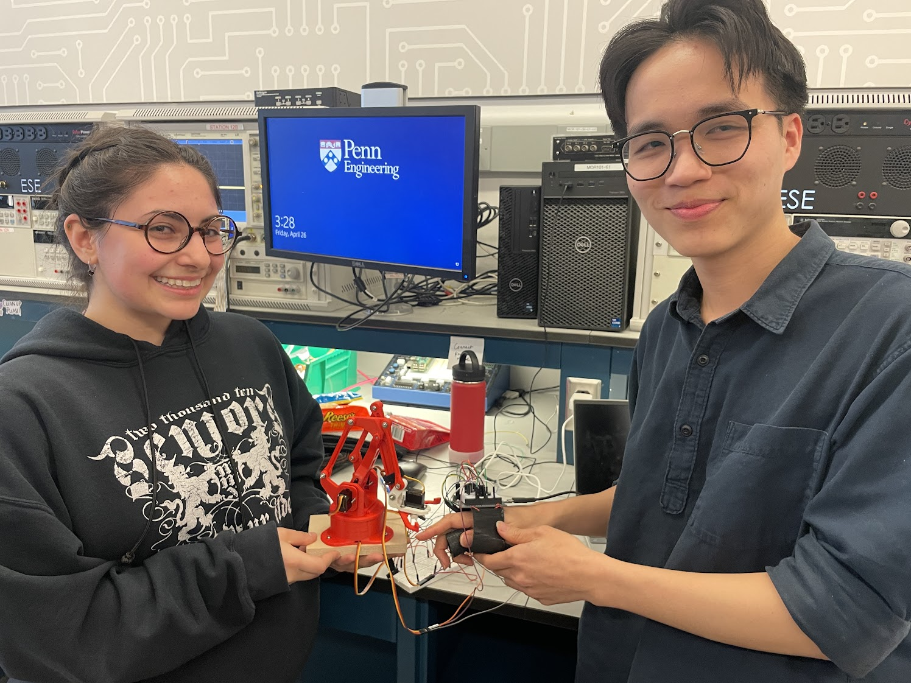

Projects
Langmates
Langmates is an AI-powered language learning platform I helped develop as part of my senior design project. It uses advanced language models and speech technology to offer real-time conversations with interactive characters, making language learning more engaging and culturally relevant. Designed for both native English speakers and ESL students, Langmates combines gamification with personalized lessons to boost engagement and learning outcomes. I contributed to the system design, user experience, and AI integration to create an effective and intuitive learning tool for K-12 classrooms.

OptiGrowV2
OptiGrow V2 is an innovative, AI-driven plant care system designed to simplify plant management and promote sustainability. Using a MobileNetV2-based image classification model, it identifies plants and determines their specific watering needs, ensuring optimal care and preventing overwatering or underwatering. The system is optimized to run on resource-constrained devices like the ESP32S3, making it ideal for users with limited time or experience in plant care. By automating the watering process and conserving water, OptiGrow not only enhances plant health but also contributes to environmental sustainability, offering an efficient, user-friendly solution for plant owners.
RoboWave
The RoboWave Project aims to create a gesture-controlled robotic arm using a wearable glove equipped with flex sensors and an accelerometer. The system interprets hand movements to control a robotic arm with four degrees of freedom, using an Atmega328PB microcontroller, ESP32, and servo motors. The glove sends sensor data to the ESP32, which transmits the information to the Atmega to adjust the robotic arm’s position.

Metal Detector
I built a metal detector that signals the presence of metal through sound. The system uses a frequency-modulated oscillator to generate a signal, which is then mixed and amplified to produce a tone when metal is detected. I used LC circuits for the oscillator and amplifier stages, carefully tuning the frequency to respond to nearby metal objects. The final design was implemented on a custom PCB, combining analog and digital components to ensure stable performance.